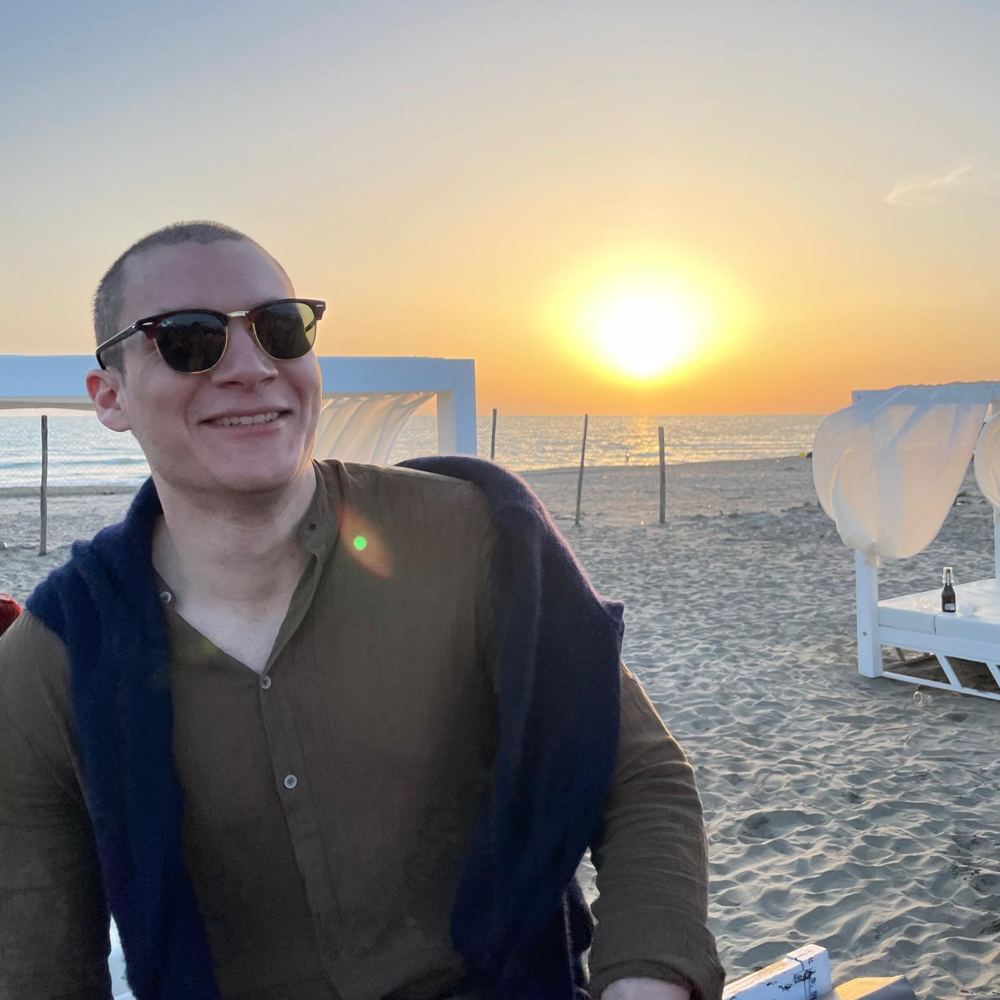

|
Mihnea-Bogdan Jurca I'm a research scientist at dotLumen, where I work on equipping assistive technologies for visually impaired persons with navigation technologies using deep learning and computer vision. I am a master's student at Vrije Universiteit Brussel and Universitatea Tehnică din Cluj-Napoca, where I completed my studies with a paper on novel view synthesis and scene understanding. I am currently pursuing research on novel view synthesis in dynamic scenes. |
 |
{kind=link}
ResearchI'm interested in computer vision, image processing, machine learning and deep learning. |

|
RT-GS2: Real-Time Generalizable Semantic Segmentation for 3D Gaussian Representations of Radiance Fields
Mihnea-Bogdan Jurca*, Remco Royen*, Ion Giosan, Adrian Munteanu Arxiv, 2024 [ArXiv] [Code] [Project Page] The first generalizable semantic segmentation method employing Gaussian Splatting. Our method is not only superior in segmentation quality, but also achieves real-time performance of 27 FPS, marking an astonishing 901 times speedup compared to the SOTA. |
|
This website template is taken from Jon Barron's GitHub repository. |